GBMF - Glaze Melt Fluidity - Ball Test
Make the test balls by pouring a little glaze on a plaster table. It should dewater in a minute or two. Scrape it up using a rubber rib and flatten it down again (wet side down). Wait half a minute, scrape it up, and put it back down if still too soft. Continue this until it is stiff enough to roll into a ball that is not sticky.
For fine powdered non-plastics (e.g. frits) we mix 100g of powder, 3-4g Veegum, and 36g water (or for two balls, 25g powder, 1g Veegum and 9g water). For powders containing coarser particles, more Veegum may be needed (however, keep its percentage to a minimum since it does affect melting). Mixing can usually be done by stirring the powder and water in a cup or allowing it to sit in a zip-lock bag. These proportions will produce a plastic material that can be formed into balls.
Weigh 12-gram specimens of the water/powder mix and roll each into a ball. Mark each. Dry them (make sure they are completely dry, do it under a heat lamp if needed).
When firing multiple ones side-by-side, use a sharp knife to trim off enough on the heavier ones so they are the same weight as the lightest one. Fire them on 2x2-inch thin porcelain tiles.
Take pictures of the fired balls and upload these to your insight-live.com account. Make additional notes about their dewatering rates, plasticity and dry hardness also.
VeeGum and CMC gum can plastify non-plastic powders:
Great for making melt-flow test balls
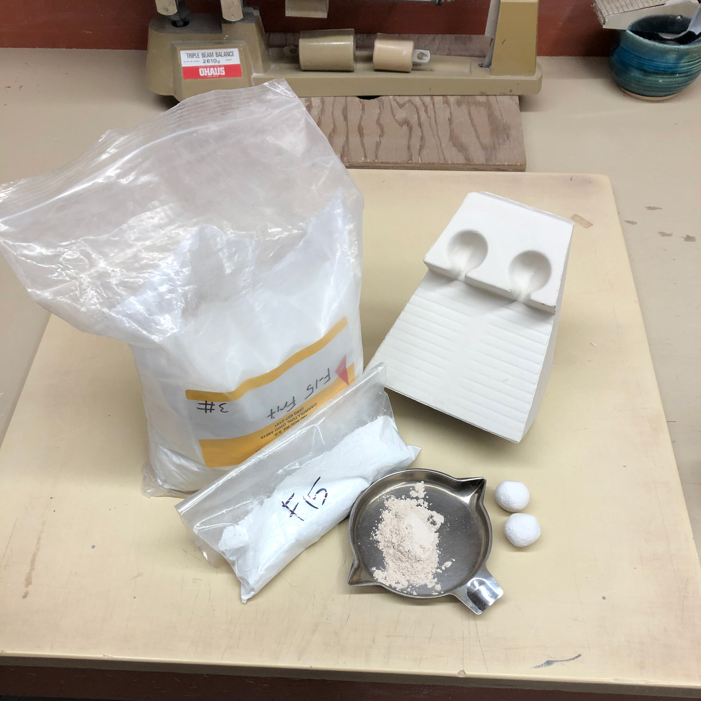
This picture has its own page with more detail, click here to see it.
Fluxes used in ceramics are almost always non-plastic, they cannot be formed like clay - frits and feldspars are good examples. And they don't dry hard. To make balls for use in the GBMF test for melt flow a binder needs to be added. Traditionally we have used Veegum, however, it interacts with materials enough to affect melting - CMC gum does not. That being said, Veegum dries better (these balls can dry very slowly). When simply comparing the melt of two materials either is fine.
Each ceramic powder responds differently to being water-mixed with a gum or plasticizer. Some material-gum mixes uptake water so well that it can be worked in drops at a time until a plastic material is produced. Others require vigorous mixing into a slurry and then dewatering on a plaster surface. We target 9g balls, they fit into the reservoir of the melt flow tester. To make one ball we start with 11 or 12g of powder (to allow for waste) and then form them into 12g (wet) balls - these dry them down to the 9g weight. We are almost always comparing the flow of two materials, in these cases it is only important that the two balls be the same weight - so we trim the heavier one down to the weight of the lighter one. Does cornstarch work? No, the mix is not plastic. Psyllium? Yes, but it has a flakey texture and demands more water.
If you are testing a plastic material then a binder is not needed.
Flat thin vitreous tiles being made for GMFA melt fluidity testing
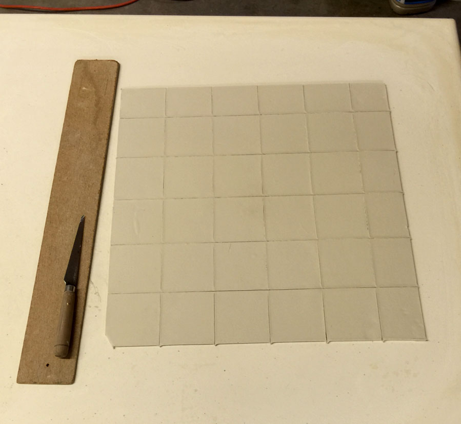
This picture has its own page with more detail, click here to see it.
This is Plainsman Polar Ice porcelain. It is plastic enough to be pulled very thin on a plaster table. I have cut it in a 2in by 2in grid. This porcelain is ideal for these testers because it has such a glassy surface, this produces minimum surface tension to resist the flow of the glaze.
Forming a glaze into balls for melt fluidity testing
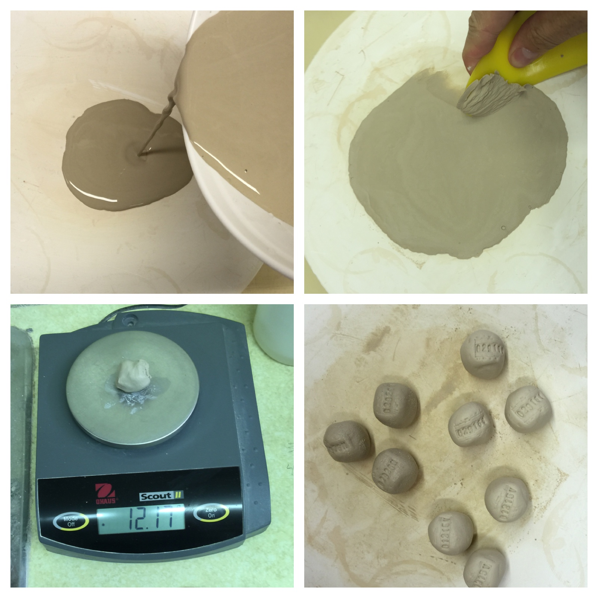
This picture has its own page with more detail, click here to see it.
The vast majority of glazes are somewhat plastic (but less than clay bodies). They can thus be dewatered on a plaster surface and formed. Why do this? To make 9-10 gram balls and fire them on flat tiles (or inclined flow testers) to see their melting characteristics. We call this the GBMF test, it is surprising how much it can tell you about a glaze or melting material. To make the ball, mix the slurry well and pour a little on the plaster. It should dewater in less than 30 seconds (although there are exceptions e.g. glaze with Gerstley Borate). As soon as the water sheen is gone, scrape it up with a rubber rib, hand-knead it and flatten it back down to dry a little more if needed (leave it only for five or ten seconds and rework it. Repeat until it is stiff enough to form balls of about 12 grams. Stamp them with ID numbers and dry them.
Various frits fired at 1950F
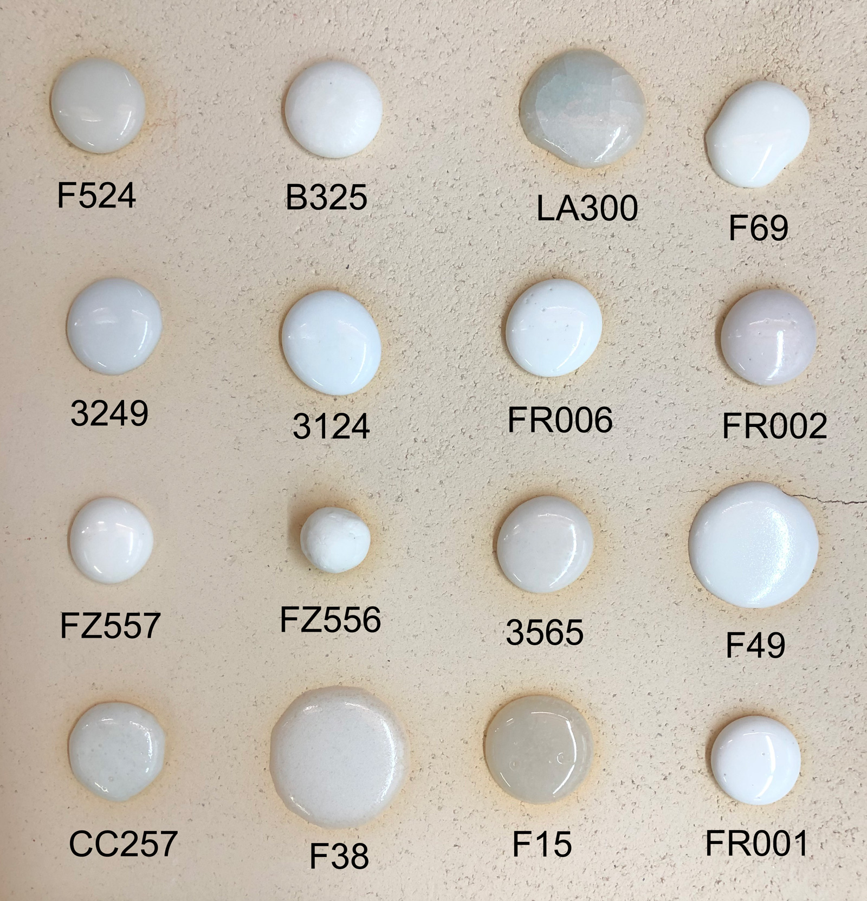
This picture has its own page with more detail, click here to see it.
These sixteen GBMF test balls have melted down onto a slab of grogged clay. Kiln fired at 108F/hr for the last 100 degrees F and held for 15 minutes. This demonstrates the comparison value of this test and how various frits compare in their melting character.
Will a cone or ball flow out better in a melt flow test?
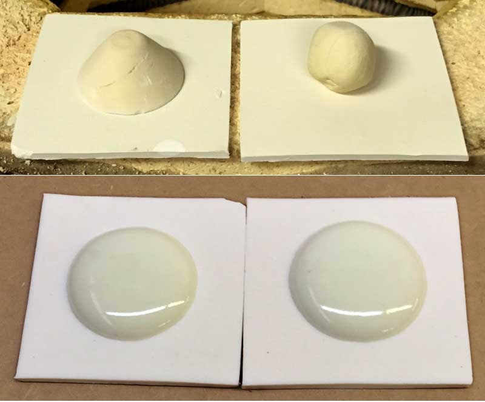
This picture has its own page with more detail, click here to see it.
This is G2926B cone 6 transparent glaze. I am developing a simple test procedure to produce an absolute measurable value for glaze melt flow and it appeared it would be worthwhile to create a mold to make these cone-shaped samples. But I was wrong. Both specimens are exactly 10 grams, but the simple ball flows better. This is likely because of better early heat penetration because there is only a small area of contact with the tile.
Surface tension differences between two glazes:
This simple test shows them best
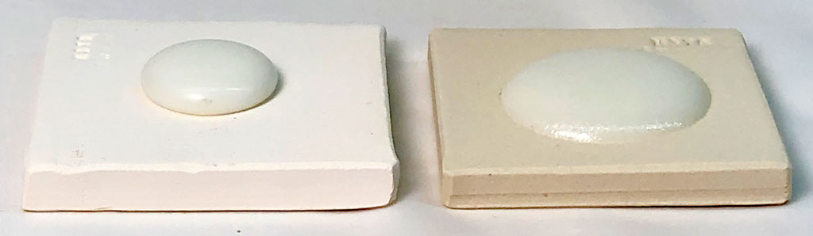
This picture has its own page with more detail, click here to see it.
Both are low-fire transparents. In a melt fluidity (GBMF test) they flow similarly. But here, where the 10 gram ball of the dry glaze is simply melted down onto a square tile (a GBMF test), differences in surface tension are more clearly evident by the angle at which the edge of the glaze meets the tile.
Comparing glaze melt fluidity balls with their chemistries

This picture has its own page with more detail, click here to see it.
Ten-gram GBMF test balls of these three glazes were fired to cone 6 on porcelain tiles. Notice the difference in the degree of melt? Why? You could just say glaze 2 has more frit and feldspar. There is a better explanation, compare these yellow and blue numbers: Glaze 2 and 3 have much more B2O3 (boron, the key flux for cone 6 glazes) and lower SiO2 (silica, it is refractory). But notice that glaze 2 and 3 have the same chemistry, but 3 is melting more? Why? Because of the mineralogy of Gerstley Borate. It release its boron earlier in the firing, getting the melting started sooner. Notice it also stains the glaze amber, it is not as clean as the frit. Notice the calculated thermal expansions: The greater melting of #2 and #3 comes at a cost, their thermal expansions are considerably higher, so they will be more likely to craze. Which of these is the best for functional ware? #1, G2926B (left). Its high SiO2 and enough-but-not-too-much B2O3 make it more durable. And it runs less during firing. And does not craze.
Why fast fire glazes employ zinc:
A melt fluidity comparison tells us
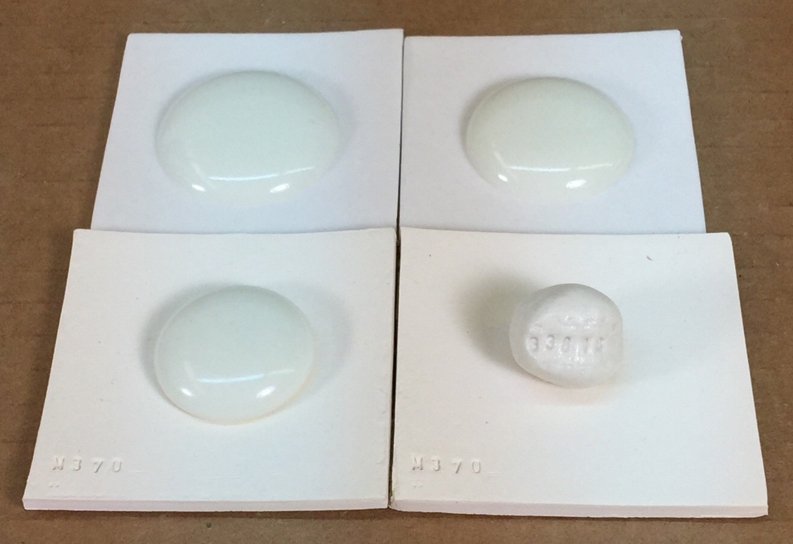
This picture has its own page with more detail, click here to see it.
I am comparing two glazes using 10-gram GBMF test balls. I am using 10-gram GBMF test balls (they simply melt down onto a tile). The top two tiles show them at cone 6, the bottom two at cone 1 (yes, most cone 6 boron fluxed glazes are already melting at cone 1).
Left: G2926B clear boron base glaze.
Right: G3814 zinc-fluxed clear base.
Two things are clear:
Zinc is a powerful flux (it only takes 5% in the recipe to yield 0.18 molar of ZnO), whereas it takes 25% frit to yield 0.33 molar of boron.
Zinc melts late: Notice that the boron-fluxed glaze is already flowing well at cone 1 (bottom left), whereas the zinc one has not even started (bottom right). This is very good for fast fire because more gases of decomposition from the body can pass before it melts, producing fewer glaze defects.
Stains added to a base glaze can change its melt fluidity. Adjust the base.
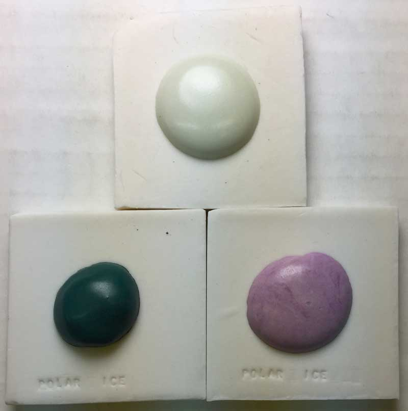
This picture has its own page with more detail, click here to see it.
At the top is a melt-flow GBMF test ball of a cone 6 satin matte glaze, G2934.
Left bottom: 8% 6213 Mason Hemlock green stain added. The color is good but it is not melting as much and the surface is more matte. A solution is to adjust the base: employ a 90:10 or 80:20 matte:glossy blend to give it better fluidity. Right bottom: 8% 6385 Mason Pansy Purple stain added. The percentage of stain appears to be a little low and its surface is a little too matte. Again, blend a some glossy clear in the the matte base to shine it up a little.
Glaze bubbles behaving badly!
We see it in a melt fluidity test.

This picture has its own page with more detail, click here to see it.
These melted-down-ten-gram GBMF test balls of glaze demonstrate the different ways in which tiny bubbles disrupt transparent glazes. These bubbles are generated during firing as particles in the body and glaze decompose. This test is a good way to compare bubble sizes and populations, they are a product of melt viscosity and surface tension. The glaze on the top left is the clearest but has the largest bubbles, these are the type that are most likely to leave surface defects (you can see dimples). At the same time its lack of micro-bubbles will make it the most transparent in thinner layers. The one on the bottom right has so many tiny bubbles that it has turned white. Even though it is not flowing as much it will have less surface defects. The one on the top right has both large bubbles and tinier ones but no clouds of micro-bubbles.
Cone 6 glazes can seal the surface surprisingly early - melt flow balls reveal it

This picture has its own page with more detail, click here to see it.
These are 10 gram balls of four different common cone 6 clear glazes fired to 1800F (bisque temperature). How dense are they? I measured the porosity (by weighing, soaking, weighing again): G2934 cone 6 matte - 21%. G2926B cone 6 glossy - 0%. G2916F cone 6 glossy - 8%. G1215U cone 6 low expansion glossy - 2%. The implications: G2926B is already sealing the surface at 1800F. If the gases of decomposing organics in the body have not been fully expelled, how are they going to get through it? Pressure will build and as soon as the glaze is fluid enough, they will enter it en masse. Or, they will concentrate at discontinuities and defects in the surface and create pinholes and blisters. Clearly, ware needs to be bisque fired higher than 1800F.
More carbon needs to burn out than you might think!
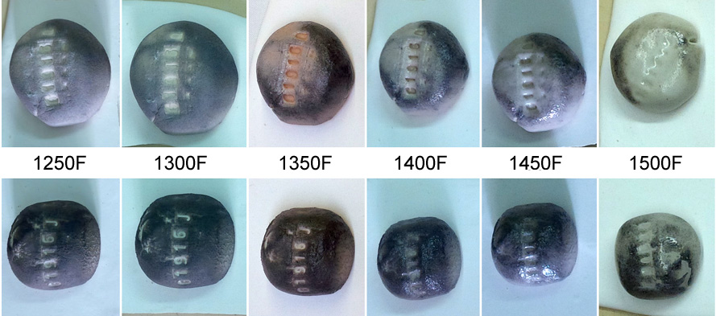
This picture has its own page with more detail, click here to see it.
Hard to believe, but this carbon is on ten-gram balls of low fire glazes having 85% frit. Yes, this is an extreme test because glazes are applied in thin layers, but glazes sit atop bodies much higher in carbon bearing materials. And the carbon is sticking around at temperatures much higher than it is supposed to (not yet burned away at 1500F)! The lower row is G1916J, the upper is G1916Q. These balls were fired to determine the point at which the glazes densify enough that they will not pass gases being burned from the body below (around 1450F). Our firings of these glazes now soak at 1400F (on the way up). Not surpisingly, industrial manufacturers seek low carbon content materials.
Melting glaze balls at various temperatures to see when all carbon has been expelled
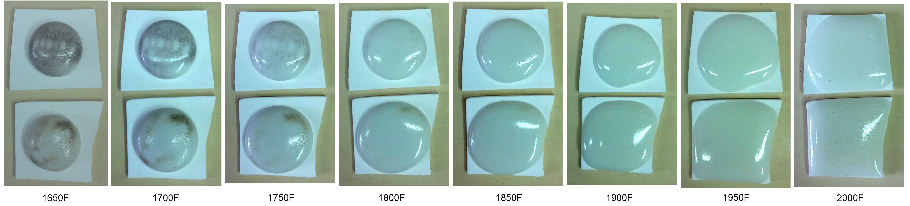
This picture has its own page with more detail, click here to see it.
G1916Q and J low fire ultra-clear glazes (contain Ferro Frit 3195, 3110 and clay) fired across the range of 1650 to 2000F (these were 10 gram GBMF test balls that melted and flattened as they fired). Notice how they soften over a wide range, starting below cone 010 (1700F)! At the early stages carbon material is still visible (even though the glaze has lost 2% of its weight to this point), it is likely the source of the micro-bubbles that completely opacify the matrix even at 1950F (cone 04). This is an 85% fritted glaze, yet it still has carbon - think of what a raw glaze might have! Of course, these specimens test a very thick layer, so the bubbles are expected. But they still can be an issue, even in a thin glaze layer on a piece of ware. So to get the most transparent possible result it is wise to fire tests to find the point where the glaze starts to soften (in this case 1450F), then soak the kiln just below that (on the way up) to fire away as much of the carbon as possible. Of course, the glaze must have a low enough surface tension to release the bubbles, that is a separate issue.
Cooling speed affects opacity in G2934 matte glaze
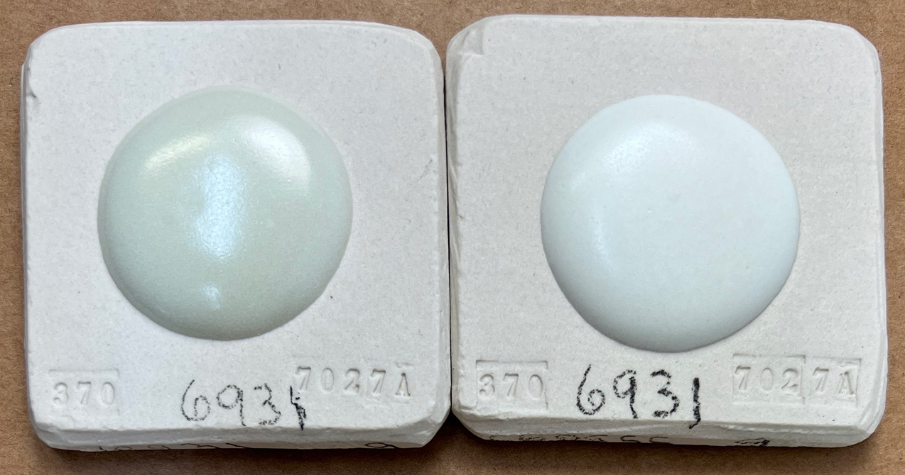
This picture has its own page with more detail, click here to see it.
These are GBMF test balls, they dry to about 15mm diameter and melt down onto the tile during firing. These are the same glaze, G2934. The left one was fired using the cone 6 PLC6DS firing schedule. The one on the right got the C6DHSC schedule, it is the same but adds a slow cool to 1400F. The slow cool is creating phase differences, enabling crystallization. This difference in opacity is also evident even when the glaze is used on ware, a special concern if it is employed over underglaze decoration.
These common Ferro frits have distinct uses in traditional ceramics
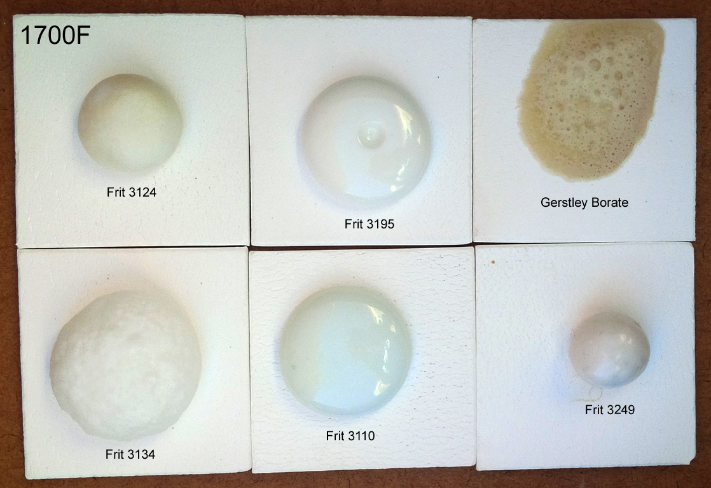
This picture has its own page with more detail, click here to see it.
I used Veegum to form 10 gram GBMF test balls and fired them at cone 08 (1700F). Frits melt really well, they do have an LOI like raw materials. These contain boron (B2O3), it is a low expansion super-melter that raw materials don’t have. Frit 3124 (glossy) and 3195 (silky matte) are balanced-chemistry bases (just add 10-15% kaolin for a cone 04 glaze, or more silica+kaolin to go higher). Consider Frit 3110 a man-made low-Al2O3 super feldspar. Its high-sodium makes it high thermal expansion. It works really well in bodies and is great to make glazes that craze. The high-MgO Frit 3249 (made for the abrasives industry) has a very-low expansion, it is great for fixing crazing glazes. Frit 3134 is similar to 3124 but without Al2O3. Use it where the glaze does not need more Al2O3 (e.g. already has enough clay). It is no accident that these are used by potters in North America, they complement each other well (equivalents are made around the world by others). The Gerstley Borate is a natural source of boron (with issues frits do not have).
More copper can produce fewer bubbles!

This picture has its own page with more detail, click here to see it.
The first glaze, G2926B, is a standard functional transparent glaze with added copper. The other three are part of a project to find a copper blue (L3806B has the best color and the best compromise of flow and bubble-clearing ability).
The GLFL testers for melt flow at the back, and the GBMF test melt-down-balls contain 1% copper carbonate. The glazed samples in front have 2% copper carbonate. But why do the recipes containing half the amount of copper have far more bubbles? Because they are thinner? Not really, in use on ware, they also have fewer bubbles. Why? A small CuO addition can change where and how bubbles nucleate and how viscous the melt is. At some point between 1% and 2%, a threshold is crossed that affects nucleation and coalescence. For example, a little copper could encourage lots of tiny bubbles to form and stay trapped, while more changes the melt chemistry enough that they coalesce and escape (or simply aren’t nucleated the same way). Phase separation could produce Cu-rich droplets that enable copper to be its own fining agent.
1700F Frit Melt-Off: Who is the winner? Not the lead bisilicate!
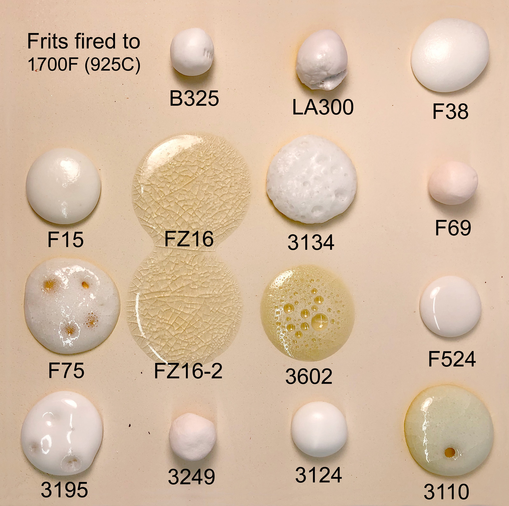
This picture has its own page with more detail, click here to see it.
These were 10g balls melted using our GBMF test. We fired at a temperature far lower than typical bisque, notice how many of them are already melting well! Frit 3602 is lead bisilicate. But it got "smoked" by the Fusion FZ-16 high-zinc, high-boron zero-alumina! Maybe you always thought lead was the best melter. That it produced the most transparent, crystal-clear glass. But that is not what we see here. That being said, notice the lead is not crazing but the FZ-16 is crazing badly, that is a problem for many applications using this frit, it relies on a high percentage of KNaO. Notice something else: Each frit has a distinctive melt fingerprint that makes it recognizable in tests like this. Want to get some of this frit for pottery? You can't, Fusion Ceramics doesn't want to handle retail sales of smaller quantities.
Variables
CONE - Cone (V)
It is of course important that the specimen be fired precisely, verify using actual cones.
DIA - Diameter (V)
If the specimen is oval measure the widest and narrowest dimension and average them. Enter the number in millimeters.
Related Information
Videos
| Media |
Making ceramic glaze flow test balls
I will make 10 gram balls of a glaze and fire them on 2in by 2in tiles to evaluate their melt flow, glass surface and susceptibility to defects. |
Links
| Glossary |
Melt Fluidity
Ceramic glazes melt and flow according to their chemistry, particle size and mineralogy. Observing and measuring the nature and amount of flow is important in understanding them. |
| Glossary |
Glaze Bubbles
Suspended micro-bubbles in ceramic glazes affect their transparency and depth. Sometimes they add to to aesthetics. Often not. What causes them and what to do to remove them. |
| Articles |
A Low Cost Tester of Glaze Melt Fluidity
Use this novel device to compare the melt fluidity of glazes and materials. Simple physical observations of the results provide a better understanding of the fired properties of your glaze (and problems you did not see before). |
| Tests |
Glaze Melt Flow - Runway Test
A method of comparing the melt fluidity of two ceramic materials or glazes by racing them down an inclined runway. |
 PayPal | No tracking, No ads, No paywall, No transient content! Just organized, concise information constantly updated and improved. Was this helpful? Consider supporting me. |
| By Tony Hansen Follow me on        |  |
Got a Question?
Buy me a coffee and we can talk 

https://digitalfire.com, All Rights Reserved
Privacy Policy